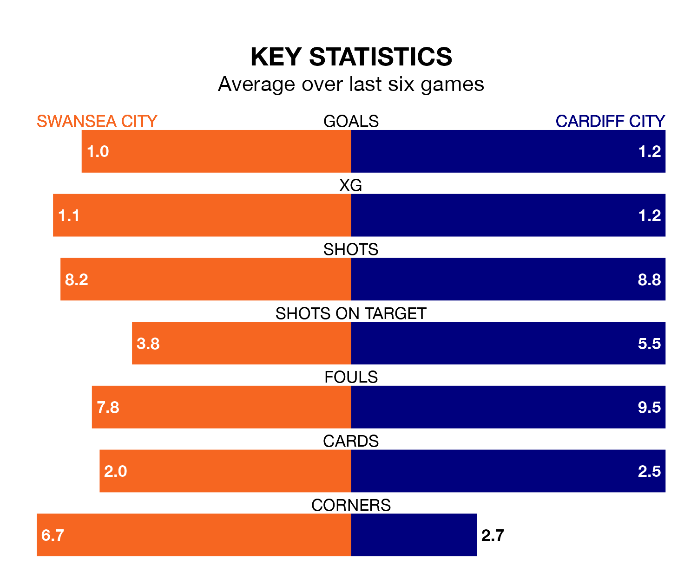

Cardiff City visit Swansea City at the Swansea.com Stadium on Saturday lunchtime on the back of four consecutive wins in EFL Championship.
Cardiff have picked up 13 points from their last six games, and they face a Swans side who lost their last match, and have collected seven points from the last possible 18.
In the last 10 years, Swansea and Cardiff have played each other on nine occasions. Swansea won six of them, Cardiff two, and they drew once.
On average, the Swans scored 1.7 goals and the Bluebirds 0.6 in those matches.
Their last meeting was on September 16, when Cardiff won 2-0 at home.
With 43 goals in 37 games so far this season, Cardiff are scoring at below the league average rate with 1.2 goals per game. But they are conceding fewer than average too, letting in 49 goals at a rate of 1.3 per game.
Swansea are also below average scorers, with 1.2 goals per game, compared to a league average of 1.4. They have conceded 1.6 goals per game.
Swansea City are 16th in the table after 37 games, of which they have won 11 and drawn 10, earning 43 points.
Cardiff City are six places ahead of the Swans in 10th, with 16 wins and five draws putting them on 53 points.
Swansea's last match was on Sunday, a 1-0 loss against Bristol City.
Cardiff beat Ipswich Town 2-1 last time out, on March 9, with Callum O'Dowda and Ryan Wintle on the scoresheet.
Saturday's match will be refereed by David Webb, who has taken charge of 25 EFL Championship games so far this season, issuing one red card and booking 101 players. He has awarded four penalties.
The last Swansea game Webb refereed was a 4-0 home loss to Leeds United on February 13. He is yet to oversee a match featuring Cardiff this season.
Updated: 15:10 (UTC), 15/03/24